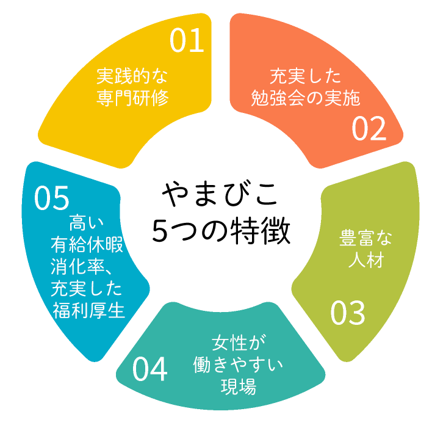

Work at Yamabikoやまびこで働く
医療法人社団やまびこは、整形外科を中心に地域に根ざした医療を提供するクリニックグループです。
患者様一人ひとりに寄り添い、「医療を、もっと身近に。」という想いのもと、安心して通える医療環境づくりを大切にしています。
当グループでは、診療だけでなくリハビリテーション医療にも力を入れ、医師・看護師・リハビリスタッフ・医療事務など、さまざまな職種のスタッフが連携しながらチーム医療を実践しています
地域医療を支えるやりがいのある環境の中で、スタッフ一人ひとりが成長し、長く安心して働ける職場づくりを目指しています。

Philosophyやまびこの特徴

実践的な専門研修
- 整形外科外来、スポーツリハビリテーション部門、通所リハビリテーション部門、それぞれの部門における業務の研修を受けることができ、各分野での経験・治療が行えます。
- 協力病院と連携し、研修を受けることができます。
充実した勉強会の実施
- 理学療法士、柔道整復師など他職種が在籍しているため、情報交換や勉強会を通じてスキルアップしていただけます。
- 当院が主催する「整形外科セラピスト研究会」では、外部から講師の先生を招き、理学療法士、作業療法士、柔道整復師等リハビリテーションに携わる方々を対象に、定例勉強会や技術研修会を行っています。
豊富な人材
- 経験豊富なスタッフが多く在籍しており、スタッフのバックアップ体制も整っています。
- 研修期間中は経験豊富な理学療法士・柔道整復師がプリセプターとして丁寧にサポートします。
女性が働きやすい現場
- 女性特有の健康課題（妊娠出産や不妊治療など）に不安をお持ちの社員に面談などを行っております。
- 産休・育休後も仕事に復帰し、活躍している女性が多数います。
高い有給休暇の消化率、充実した福利厚生
- 有給日数を管理し、取得してないスタッフには声がけをし、プライベートと仕事をしっかりと分け、スタッフの健康管理も行っています。
- 休憩室の無料wi-fiや自販機の割引など、楽しく長く続けられる企業を目指しています。
Job seeker profile求める人物像
- 自ら「考え」、「学び」、「実行する」。常に向上心を持ち、企業全体の活性を生み出せる方
- 患者様・スタッフを大事にし、また自らも明るく前向きに働ける方
- 「おごらず」「いばらず」常に謙虚な姿勢で、チームワークを大切にする方
- 失敗や困難にもくじけず仕事に取り組める方
- 環境・社会の変化にも対応し、常に研究心・探求心を持って働ける方
Recruitment採用情報

医師
地域医療を支える医師
詳しく見る
看護師・看護助手
外来診療を支える看護スタッフ
詳しく見る →
理学療法士
リハビリテーションの専門職
詳しく見る →
柔道整復師
運動療法や機能回復をサポート
詳しく見る →
放射線技師
診断を支える画像検査の専門職
詳しく見る →
臨床検査技師
検査業務を通じて診療を支援
詳しく見る →
医療事務・クラーク
受付や診療補助などを担当
詳しく見る →
総務部・総合職
法人運営を支えるバックオフィス
詳しく見る →
その他
清掃・送迎などサポート業務
詳しく見る →
ハンドボール採用
仕事と競技を両立できる環境
詳しく見る →《2025年卒・2026年卒対象》企業説明会
★事前予約制
放射線技師・理学療法士・柔道整復師・医療事務・ハンドボール採用を対象とした新卒者向けの企業説明会を実施しております。
日程につきましては施設の状況等によって変更となる場合がございますのでご了承ください。
※入職をご希望の方で、遠方からお越しの方は当日面接も可能です。（要事前連絡）
※その他施設見学等ご希望の場合は随時ご対応いたしますので、お気軽にご連絡ください。
| 内容 | 企業説明・院内見学 |
|---|---|
| 日程 | 本年度の企業説明会はすべて終了いたしました。 |
| 受付時間 | 9時45分より受付開始 |
| 場所 | 〒222-0033 神奈川県横浜市港北区新横浜3-6-5 新横浜第一生命ビル2階 |
| 参加受付先 | フォームよりご予約ください。 お電話（080-4717-1274）またはメール（info@yamabiko-group.or.jp）でも予約可能です。 |
Recruitment福利厚生
-
医療費補助
グループ内クリニックでの診療費をサポートします。
-
健康診断・予防接種
年1回の健康診断や各種ワクチン接種を実施。
-
資格取得支援
スキルアップのための資格取得を応援します。
-
社会保険完備
安心して働けるよう各種保険を完備しています。
-
交通費支給
通勤にかかる交通費を支給します。
-
福利厚生アプリ
お得に使える専用サービスが利用可能です。
-
育児・産休制度
ライフステージに応じた働き方を支援します。
-
介護休暇
ご家族の介護が必要な場合も安心です。
-
制服貸与
業務に必要な制服を貸与します。
-
社内設備
自販機などを割引価格で利用できます。
-
フリードリンク
コーヒーやスープを自由に利用できます。
-
社内イベント
忘年会など交流の機会もあります。
選考の流れ
ご応募から内定までのステップ
-
01
企業説明会（任意）
ご希望の方はご参加いただけます
-
02
ご応募
フォームよりエントリー
-
03
書類選考
内容をもとに選考
-
04
面接
適性を含め実施
-
05
合否通知
結果をご連絡
あなたも、地域医療を支える仲間に。
やまびこグループでは、地域医療を支える仲間を募集しています。
見学や説明会の参加も歓迎しておりますので、お気軽にエントリーください。